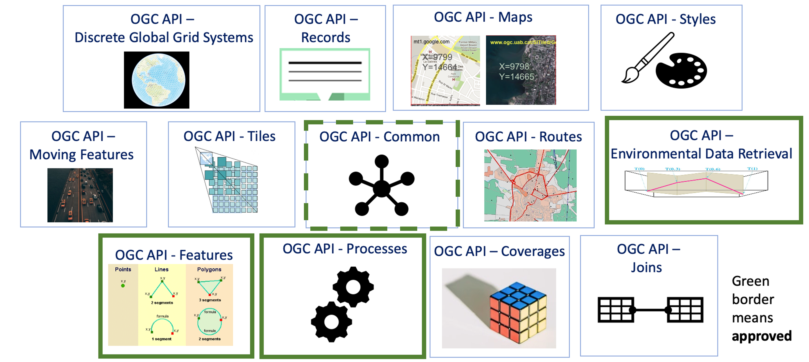
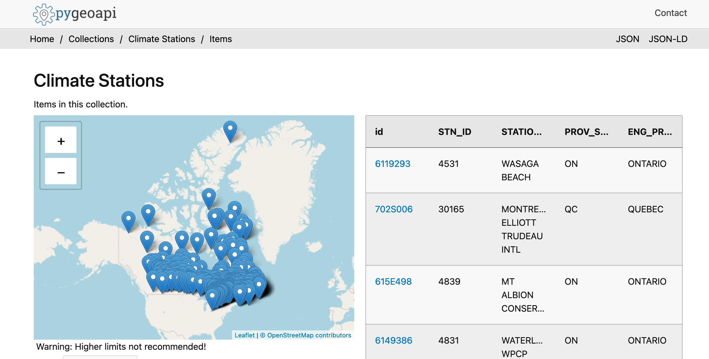

Implementing OGC APIs using Elasticsearch and pygeoapi

This presentation available at pygeoapi.io/presentations/elastic-cc-2022
Table of contents
- OGC API Overview
- Say hello to pygeoapi
- Elasticsearch integration
- pygeoapi in production
OGC API Overview
Open Geospatial Consortium (OGC)
- circa 1994
- Geospatial standards (formats, interfaces)
- Web Map Service (WMS) flagship first generation standard (1999)
OGC API
- Geospatial APIs for the web
- W3C Spatial Data on the Web
- Being webby (humans, search engines)
- Developer friendly
- Lightweight specification development (GitHub)
- Removing HTTP use as a tunnel
/ows?request=GetFeature&typename=roads&featureid=5- /api/collections/roads/items/5
- Modular specifications (building blocks)
OGC API standards
Say hello to pygeoapi
 A Geopython project
A Geopython project- Created by Tom Kralidis in 2018 on Valentine's Day with ❤️
- OSGeo Community Project
Project Overview
- Geospatial data API framework
- OGC Reference Implementation
- International team (Canada, Netherlands, Greece, Italy, New Zealand)
- Numerous core contributors

Elasticsearch integration
Production instances
Canada
Meteorological Service of Canada GeoMet API platform
api.weather.gc.ca- OGC platform of Canadian weather, climate and water data
- Realtime weather
- Numerical weather prediction
- Hydrometric and Climate archives
MSC GeoMet

Upcoming Code Sprint
8 - 10 March 2022: Joint OGC OSGeo ASF Code Sprint Free registration, Free participation developer.ogc.org/sprints/15Thank you!
- Website: pygeoapi.io
- Docs: docs.pygeoapi.io
- Demo: demo.pygeoapi.io
- GitHub: github.com/geopython/pygeoapi
- Docker: hub.docker.com/r/geopython/pygeoapi
- Gitter: gitter.im/geopython/pygeoapi
- Mailing list: lists.osgeo.org/mailman/listinfo/pygeoapi